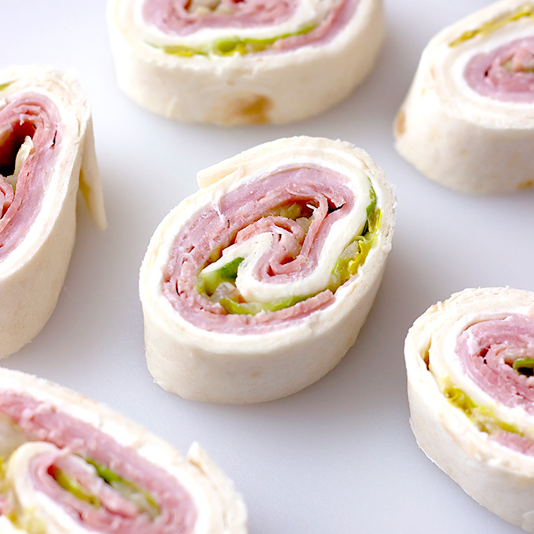

Cream Cheese Italian Pinwheels

Description
Cream Cheese Italian Pinwheels – A pinwheel appetizer filled with cream cheese, ham, salami, banana pepper rings, shredded lettuce, and Italian dressing.
Ingredients
- 8 oz. cream cheese room temperature
- 4 large (10 inch) flour tortillas
- 9 oz. deli ham thinly sliced
- 7 oz. hard salami thinly sliced
- 1/3 cup drained banana pepper rings
- 2 cups shredded lettuce
- 2 tbsp. Italian dressing
Steps
- Divide the cream cheese among the tortillas. Spread the cream cheese in a thin layer to cover the tortillas.
- Add thin layers of ham and salami, covering half of each tortilla.
- Spread the banana pepper rings in a line down the middle of the tortilla, along the edge of the meat.
- Add the lettuce and Italian dressing to a bowl. Mix until the lettuce is evenly coated. Spread the lettuce evenly over the meat.
- Starting with the end that has the toppings, roll up the tortillas as tightly as you can.
- Tightly wrap the rolls in plastic wrap. Refrigerate for 30-60 minutes (no longer, 45 minutes is the sweet spot).
- Remove the plastic wrap. Slice each roll into 12 pieces, making 48 pinwheels.
- Line a platter with paper towels. Arrange the pinwheels evenly on the platter and serve immediately (the paper towels prevent the tortilla from getting soggy).